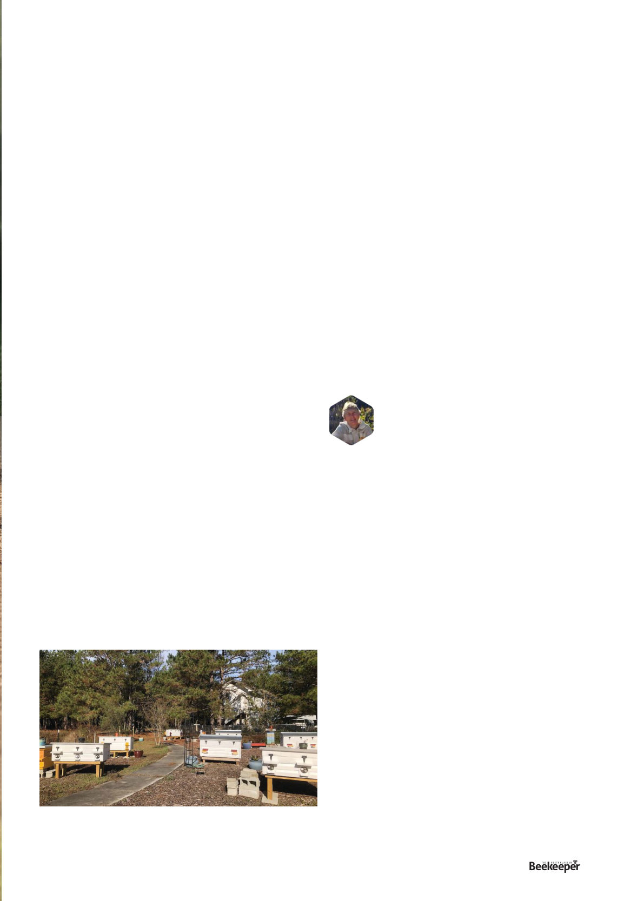

broodless honeycomb that works like a queen excluder).
At 22 cents apiece, these ties are easy to remove when it is
time to harvest honey.
6 The STS hive incorporates some very convenient features,
including IPM pans to trap small hive beetles, wax moth
larva and falling mites; ports that make delivering oxalic
acid vapor a breeze; bee escapes under the roof (so lin-
gering bees can find their way out), and see-through inner
covers with a hole for rapid round feeders and fondant. I
love my see-through inner covers! On any but the coldest
of winter days - that is, any time the ambient temperatures
are over 13 degrees C - I can check bee numbers, activity
and food consumption without chilling the bees or break-
ing propolis seals. Using inexpensive Govee sensors, I can
check hive temperature and humidity with just a glance.
Placed under each observation window, these 5x7.5cm
sensors are completely ignored by the bees, and surpris-
ingly, propolis has never been an issue. When working with
one colony, I place a hand towel over the inner cover of the
other colony, so as not to disturb them. It works well.
7 This hive’s insulation (which runs from R-7 on the sides
to R-10 on top) keeps a lot of the heat out in the truly hot
summer, and it helps to keep the heat of the bees in during
the colder months, more similar to a bee tree than a stand-
ard vertical hive with an R rating of 0.75. In the high heat
of August, temperatures in my STS hives are 3-4 degrees
cooler than my other hives. On the colder days of January,
temperatures in these insulated hives are a full 6-11 degrees
warmer than the other hives, and my bees don’t have to eat
as much to maintain their temperature.
8 The insulation (and reduced honey consumption) also
helps to keep winter humidity down, as it would for any
hive design. For example, on December 24, 2023, my mostly
uninsultated Langstroth hives had readings of 85%, 77%,
71% and 88% humidity, and condensation could be seen
around the top edges of two of the hives. Contrast that with
readings of 55%, 56% and 62% in the insulated STS hives.
Adequate top insulation in particular means no cold surface
above the bees to collect condensation.
9 These hives are stable. We are in a hurricane-prone area
with plenty of black bears. In both cases, it is the vertical
hives we worry about first. STS hives do well in the wind,
and while their stability doesn’t make them bear-proof, it
can’t hurt should our local bears come closer to our apiary
than they have to date.
10 Since the follower boards used in horizontal hives allow for
examination and manipulation of bee colonies with less
interruption than in vertical hives, and since mega-frames
give bees lots of room to move around while they’re being
inspected, I truly believe the bees in these hives are calmer.
I don’t need to use a smoker, a point that is important to
me because I have asthma.
11 Lastly, since they are built using commonsense layers, first
from the bottom up, and then from the bee cavity out, it
doesn’t take specialized woodworking knowledge to build
a Supers-to-the-Side hive, simply attention to detail and the
ability to measure and cut materials accurately. A two-col-
ony hive can be built using just $500 worth of materials. Two
videos detail how, and a tools and materials list is included:
https://www.youtube.com/watch?v=TsJHjOBE0Eg https://
www.youtube.com/watch?v=LGz22X-8UlQ
Lynne Swanson is a retired veterinarian with particular
interests in canine and honey bee behavior. She
volunteers at Safe Harbor Farm’s teaching apiary in
coastal North Carolina, U.S. Her YouTube channel
for dog and honey bee enthusiasts includes videos
showing her working STS hives. The channel is
givesmiles.us.
• This colony has newly hatched bees with deformed wings and
lots of mites, so it is almost finished as their health and vitality
has greatly diminished.
Vol. 127 | No. 4 |
| 15